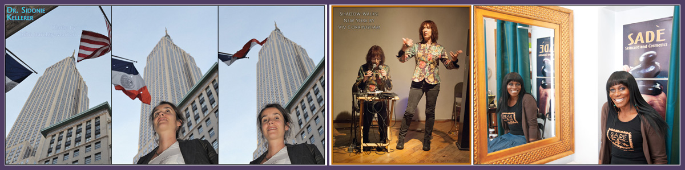
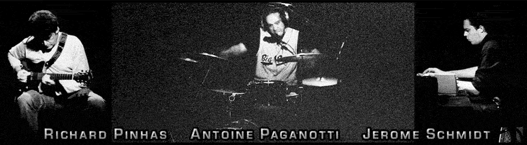

All Things Photography:
I am particularly adept in dealing with images, and all matters pertaining to photography. I started developing and printing black and white film in 1974, at the age of 14. Any camera I am holding becomes, for all intents and purposes, a natural extension of my body and mind. I even studied astronomy for a year in university, to learn more about the nature of light and, how it can be captured by imaging systems. I love photography; and although there are some things I don’t enjoy doing — such as photographing weddings — there really isn’t anything I can’t do in photography, that a camera can manage to capture.

Graphic Design:
I’ve been using Adobe Photoshop and InDesign pretty much since they’ve been around: I started out using Aldus PhotoStyler and PageMaker, before Adobe bought Aldus and acquired those programs (along with FreeHand, which was competing with Adobe Illustrator for market share). One of my greatest assets as graphic designer comes from having learned image and text editing, as well as design and layout, before digital programs were developed to accomplish these tasks: as a result, I began using these programs already knowing what they were supposed to be doing — and why the options they made available were being offered in that software. Consequently, I always approach projects from “outside” the digital tools I use, looking first to see how the final product should look and then determining how best to achieve those results.
Writing; Research and Synthesis:
My background in philosophy has been focussed upon linguistic analysis, with an emphasis upon visual systems of communication; but my work experience has been on the street, working for small newspapers and other print publications. In between the two, I’ve compiled a lifetime of experience doing original research, writing, and designing layouts for publication. My skill sets encompass everything from gathering information, to synthesizing new concepts, to presenting these ideas in ways that are readily accessible to others.

Editing Text:
I have a reputation for being a meticulous editor of text: grounded no doubt in years spent searching for and removing tiny dust particles from black and white negatives; and a lifetime spent closely reading philosophic texts, word-by-word. I have edited four books to date, including two by New York Times bestselling author Debbie Mack.
Whether I am line editing business reports; or doing a developmental edit for a philosophic text; or editing a bestseller: I always bring my best to the task at hand.